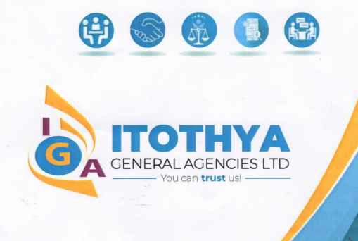

Your Trusted Partner in Debt Recovery and Financial Services
Your trusted partner in debt recovery and financial solutions.
Discover More Welcome to Itothya General Agencies Ltd, a cornerstone in Kenya's financial services sector since our establishment in 2005. As a medium-sized, indigenous company proudly owned and managed by Kenyans, we've cultivated a deep understanding of the local market dynamics while maintaining international standards of service delivery. Our journey, which was formalized with our incorporation under the companies act on June 20th, 2012, reflects our commitment to excellence and continuous growth in serving Kenya's corporate sector. What sets us apart is our unique approach to financial services and debt recovery. We believe in delivering positive results on time, every time, while maintaining a distinctive balance between professional efficiency and human understanding. Our success is built on the foundation of recognizing that behind every account, there's a story, and behind every debt, there's an opportunity for resolution that benefits all parties involved. In an industry often characterized by rigid procedures, we've distinguished ourselves through our innovative and friendly approach to debt recovery. We understand that financial challenges can affect any business or individual, which is why we've developed sophisticated yet empathetic collection strategies that maintain dignity while achieving results. This philosophy has earned us the trust of major corporations, financial institutions, and businesses across Kenya. Our evolution from a modest start-up to a leading financial services provider demonstrates our unwavering commitment to excellence and innovation. We've consistently invested in our team, technology, and processes to ensure we remain at the forefront of the industry. Our staff undergoes regular training and development programs to stay current with the latest industry trends and best practices, ensuring we provide cutting-edge solutions to our clients' challenges. As we continue to grow and expand our services, we remain true to our founding principles: seeing far beyond immediate challenges, aiming high in setting and achieving goals, and staying focused on delivering exceptional results. Our track record speaks for itself - we don't just meet expectations; we exceed them. Whether you're a large corporation seeking comprehensive debt recovery solutions or a small business needing specialized financial services, Itothya General Agencies Ltd brings the same level of dedication, professionalism, and results-oriented approach to every client relationship. At Itothya, we're more than just a financial services provider - we're your partner in success. Our commitment to integrity, transparency, and results has made us a trusted name in the industry. As we look to the future, we continue to innovate and adapt, ensuring that we remain at the forefront of financial services while maintaining the personal touch and local understanding that has been our hallmark since inception. When you choose Itothya, you're not just selecting a service provider; you're partnering with a team that understands your needs, respects your challenges, and is dedicated to your success. This is why we stand out from the rest -because your success is our success.
Expert debt collection solutions tailored to corporate and retail needs. Our approach ensures high contact rates and effective results.
We work closely with our clients to customize debt collection strategies, combining client meetings, demand letters, telephone negotiations, and legal advice to provide a seamless service.
Helping locate hard-to-find debtors and conducting thorough investigations for efficient recovery processes.
Our specialized skip tracing services use advanced techniques and databases to help track down debtors, ensuring that companies can recover owed amounts even when clients are difficult to reach.
Fast, reliable, and professional document serving services for all your legal needs.
Our team handles court documents with precision and efficiency, ensuring they reach their destinations securely and on time. We manage large workloads seamlessly, serving you with professionalism.
Our asset search services provide a comprehensive approach to identifying and evaluating assets. We combine advanced search techniques with access to public records, helping you gain detailed insights with accuracy and speed.
Our dedicated team of investigators are trained in asset serching, with the knowledge of various public information databases.
Our debt surveillance service is designed to monitor and assess changes in debtor financial status, enabling timely adjustments to debt collection strategies. Stay informed about your debt portfolio with our proactive monitoring solutions.
We undertake debt debt-survaillance and monitoring on debts that may have been written by companies. Upon confirmation of changes in the customers financial circumstances, we duly advise our clients.
Our consultancy services support businesses in establishing robust credit policies, enhancing debt collection methods, and ensuring compliance with industry standards. Benefit from our tailored training and strategic guidance to strengthen your financial processes.
We are consultants on the following areas: 1. Setting up credit policies and system strategies 2.Training on debt collection
Reach out to us for any inquiries or assistance. Our team is here to help.